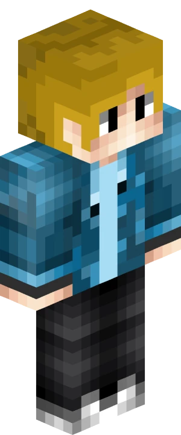
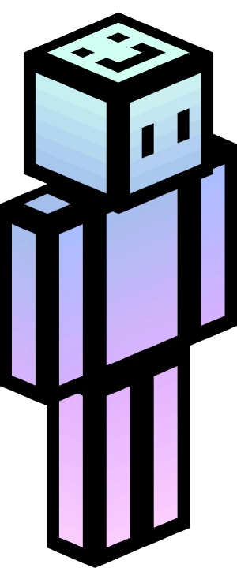

Owner
RealCraftGuy
Hat Luchs gegründet und programmiert die eigenen Plugins, baut die Maps und betreibt den Server. Trifft am Ende die Entscheidungen.
Das sind die Leute hinter Luchs. Im Spiel erkennst du sie am Rang vor dem Namen und in der Tablist.

Hat Luchs gegründet und programmiert die eigenen Plugins, baut die Maps und betreibt den Server. Trifft am Ende die Entscheidungen.

Hat den Discord-Server von Luchs aufgebaut und ist dort für die Community da.
Leiten das Netzwerk und vergeben Ränge.
Kümmern sich um Technik und Einstellungen.
Programmieren die eigenen Luchs-Plugins.
Planen Events und halten die Community zusammen.
Moderator und Senior-Moderator: entscheiden über Banns und längere Strafen.
Erste Ansprechpartner im Spiel: helfen, verwarnen, kicken, muten.
Bauen an Lobby, Maps und Deko.
Sichtet Bewerbungen fürs Team.